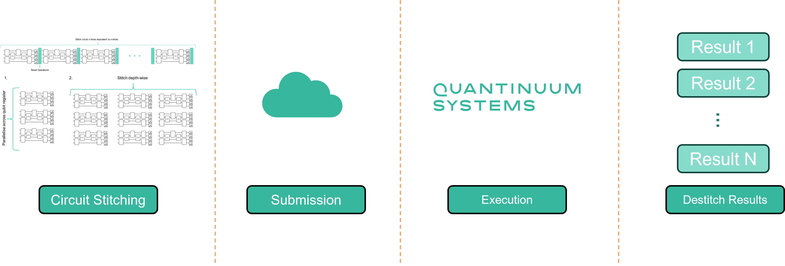

Circuit Stitching¶
Circuit stitching is a workflow to “stitch” multiple jobs into 1 job using mid-circuit measurement and reset (MCMR). Stitching involves appending circuits depth-wise and width-wise across the qubit register. On Quantinuum Systems MCMR is high-fidelity, so users can derive multiple benefits from stitching. The first benefit is the reduction of job runtime because many jobs are stitched into one job submission. For each new job, the system performs a sequence of actions in repetition which contribute to the overall job runtime. However, by “stitching” many jobs into one job these actions are reduced. The second benefit is to minimize Hardware Quantum Credits (HQCs) consumption for experiments consisting of multiple jobs. Circuit stitching for a 5-qubit classical shadows use case shows a 100x improvement in HQC cost.
{kind=link}
There are two components to cost jobs in terms of HQCs:
Fixed contribution of 5 HQCs for each circuit submitted to Quantinuum Systems for execution
Circuit-specific cost accounting for the number of gate operations and shots
The schematic above shows a basic stitching workflow. Instead of submitting multiple circuits to the system, HQC consumption can be minimized by stitching circuits together depth-wise. Additionally, if the number of qubits needed is smaller than the number of device qubits, then circuits can be stitched in parallel across the qubit register. Workflow details the necessary steps to perform circuit stitching during program construction. Classical Shadows demonstrates a 5-qubit GHZ state reconstruction using circuit stitching and no stitching.
To ensure optimal performance, the following constraints must be satisfied by the stitched circuit:
The size of the underlying QASM program must not exceed 6 MBs.
The stitched circuit must have a total cost of < 50 HQCs.
The stitched circuit uses less than the maximum number of classical registers supported by the system.
The maximum number of bits per classical register is specific to each system and should not be exceeded.
Each subcircuit, added to the stitched circuit, consumes a new distinct classical register.
Multiple classical registers would be consumed by subcircuits with MCMR operations.
The primary advantage of circuit stitching is the reduction in HQCs for classical shadow type use cases, where each shot is a new circuit. Additional benefits in execution time maybe observed since the number of system actions to verify performance is reduced. The 50 HQCs hard limit ensures the chunk, corresponding to the single-shot stitched circuit, does not exceed the chunk duration. This helps minimize impact on system performance. This is discussed further in System Operation.
Workflow¶
The circuit_stitching function accepts a list of circuits and first stitches the circuit in parallel, across the qubit register, and then depth-wise. The input_circuit list must be consistent in the number of qubits. This routine is followed until all circuits have been stitched. The number of classical registers on the output circuit is equal to the number of circuits stitched together. For parallel stitching, the function first checks the number of qubits in the circuit to be stitched are less than the number of device qubits. If this is true, a parameter, p, estimates the number of times the input circuits will fit into the register. Based on this step, a list of list of circuits is constructed. Each sublist is stitched depth-wise. Each circuit in the sublist is stitched in parallel across the register.
Assumptions:
Does not support subcircuits with MCMR operations.
Assumes all circuits in a subcircuit are measured.
Each subcircuit (to be stitched) consumes a classical register.
The end user is encouraged to limit the total number of 2-qubit gates on the stitched circuit to less than 12,500 2-qubit gates. The total number of 2-qubit gates can be derived by inspecting the HQC formula for 1 circuit and assuming 2-qubit gates, \(N_{2q}\), are the dominant gates on the stitched circuit. In this case, the impact of 1-qubit gates, \(N_{1q}\), and measurement-gates, \(N_m\), are negligible (\(N_{1q}\), \(N_{m}\) \(\rightarrow\) 0). The classical shadows use case only requires 1 shot (\(C = 1\)). The stitched circuit must have overall cost below the 50 HQCs hard limit (\(\textrm{HQC} = 50\)),
The reset operation is required to stitch measurement circuits. After each measurement operation a operation is applied to set the qubit to the \(|0 \rangle\) state before proceeding with the operations in the next subcircuit. The method below generates a circuit with reset operations.
from pytket.circuit import Circuit, CircBox
def reset_operations(
n_qubits: int
) -> CircBox:
r"""Generate a n-qubit CircBox instance containing OpType.Reset operations.
:param n_qubits: Number of qubits used in the CircBox instance
:param_type int:
:returns: CircBox
"""
circuit = Circuit(n_qubits)
circuit.name = "Reset"
for q in circuit.qubits:
circuit.Reset(q)
return CircBox(circuit)
The circuit_stitching function allow a list of circuits to be stitched together. The second positional argument, BackendInfo, is used to determine how many circuits can be stitched in parallel across the qubit register. Note that BackendInfo is a pytket class, following a certain specification. The _add_circuits function is used to add circuits to a global circuit instance.
{kind=link}
from typing import List, Dict, Tuple
import numpy as np
from pytket.circuit import Circuit, CircBox, Qubit, BitRegister
from pytket.backends.backendinfo import BackendInfo
def _add_circuit(
circuit_instance: Circuit,
circbox: CircBox,
index: int,
qubits: List[Qubit],
resetbox: CircBox = None
):
creg = circuit_instance.add_c_register(f"creg_{index}", len(qubits))
circuit_instance.add_circbox(circbox, qubits + list(creg))
if resetbox:
circuit_instance.add_circbox(resetbox, qubits)
def circuit_stitching(
input_circuits: List[Circuit],
backend_info: BackendInfo
) -> Tuple[Circuit, Dict[int, BitRegister]]:
r"""Generate a stitched circuit based on a list of input circuits. The circuit is
stitched width-wise and then depth-wise.
:param input_circuit: Circuit instance to stitch `n` times.
:param backend_info: BackendInfo instance containing information on number
of device qubits, number of allowed classical register and maximum width
for each classical register.
:returns: Circuit
"""
if all(input_circuits[0].n_qubits != c.n_qubits for c in input_circuits[1:]):
raise ValueError("All circuits should have the same number of qubits.")
n_qubits_device = len(backend_info.architecture.nodes)
p = np.floor_divide(n_qubits_device, input_circuits[0].n_qubits)
num_c_reg = 0
circuit = Circuit(n_qubits_device)
reset_box = reset_operations(input_circuits[0].n_qubits)
circuits_list = []
for i in range(0, len(input_circuits), p):
circuits_list += [input_circuits[i:i+p]]
for k, circuits in enumerate(circuits_list):
for i, c in enumerate(circuits):
circ = c.copy()
circ.name = f"box_{num_c_reg}"
a = i * circ.n_qubits
b = (i + 1) * circ.n_qubits
qubits = circuit.qubits[a: b]
if k == len(circuits_list) - 1:
reset_box = None
_add_circuit(circuit, CircBox(circ), num_c_reg, qubits, resetbox=reset_box)
num_c_reg += 1
return circuit
The classical register needs to be extracted from the stitched circuit and sorted by name. This data is required to destitch the measurement result. If the job submission process is across multiple python sessions, then the classical registers from the stitched circuit need to be saved to local disk. The save_classical_registers function performs this task and optionally saves the data to a file, if a filename is specified. The function requires a list of BitRegister instances and an optional filename. The output is a list of BitRegister sorted by the integer suffix in the register name.
from typing import List
import json
from pytket.circuit import BitRegister
def save_classical_registers(
registers: List[BitRegister],
file_name: str = None
) -> List[BitRegister]:
registers.sort(key=lambda a: int(a.name.split("_")[-1]))
register_data = {reg.name: reg.size for reg in registers}
if file_name is not None:
json_io = open(file_name, "w")
json.dump(registers)
json_io.close()
return registers
The function load_classical_registers loads in classical register data stored in json format on local disk. This is required to load data saved using save_classical_registers. The load_classical_registers function requires the filepath as input and outputs a python list of BitRegister objects.
from typing import List
import json
from pytket.circuit import BitRegister
def load_classical_registers(
file_name: str = None
) -> List[BitRegister]:
with open(file_name, "r") as json_io:
data = json.load(json_io)
register_list = [BitRegister(name, size) for name, size in data.items()]
register_list.sort(key=lambda k: int(k.name.split("_")[-1]))
return register_list
The function destitch_results destitches results, i.e it converts the measurement result from the stitched circuit execution into a python list of measurement results. Each measurement result in the list corresponds to a subcircuit on the stitched circuit. The measurement result and a list of classical registers (used by the stitched circuit), are required as input. The classical register list corresponds to each subcircuit on the stitched circuit and respects the ordering of the subcircuits. The measurement result contains the shot distribution and is represented by the BackendResult object. BackendResult allows the user to represent the measurement result as a shot table, or as a python dict, mapping bitstrings to either a probability or a count of occurrence. In addition, measurement data can be retrieved for a specified classical register. The class OutcomeArray is used internally within destitch_results to read and compress the measurement data for a specific classical register.
from pytket.backends.backendresult import BackendResult
from pytket.utils.outcomearray import OutcomeArray
def destitch_results(
stitched_result: BackendResult,
register_list: List[BitRegister]
) -> List[BackendResult]:
destitched_results = []
for reg in register_list:
outcome_array = OutcomeArray.from_readouts(stitched_result.get_shots(reg))
destitched_results += [BackendResult(shots=outcome_array)]
return destitched_results
The size of the underlying QASM program can be estimated using estimate_qasm_program_size. All stitched circuits must be below the QASM program size limit of 6 MBs.
import sys
from pytket.circuit import Circuit
from pytket.qasm import circuit_to_qasm_str
def estimate_qasm_program_size(
circuit: Circuit
) -> int:
qasm_str = circuit_to_qasm_str(circuit, header="hqslib1")
return sys.getsizeof(qasm_str) / 1024**2
Impact on System Operation¶
System actions, such as validations or calibrations, are periodically executed to ensure maximal system performance, during system operation. Jobs are submitted to the hardware with an integer-number of shots specified by the user. Circuits are split into chunks of shots executed together. The number of shots in a single chunk is chosen so that the execution of a single chunk does not cause too much time to elapse between calibrations and validations.
{kind=link}
Stitching subcircuits into one large circuit will result in the group of subcircuits being run as a single chunk, reducing the number of calibrations or validations undertaken during execution of the group of subcircuits and providing wall-clock time savings for circuit execution of all the subcircuits. However, to ensure minimal impact on system performance, the 50 HQCs limit ensures the execution time for the single chunk of a large, stitched, single-shot, single-circuit does not exceed the maximum duration threshold between validations and calibrations on the system.
Improvement in wall-clock time savings for circuit execution may be offset by repeated chunk invalidation. If the execution of the single chunk of the large stitched circuit consistently fails, this can affect system throughput and the overall execution time of the stitched circuit.
{kind=link}
Backend Information¶
Device specific information can be retrieved using the get_all function. Using the issuers kwarg filters the output to only include Quantinuum targets. This information can be visualized as a pandas dataframe using .df().
import qnexus as qnx
devices = qnx.devices.get_all(issuers=[qnx.devices.IssuerEnum.QUANTINUUM])
devices_df = devices.df()
devices_df.tail()
The BackendInfo can be retrieved using the Nexus Device class and filtering for the desired Quantinuum System using the pandas DataFrame output. From BackendInfo, the maximum number of classical registers and the maximum width (maximum number of bits in 1 register) are reported. These parameters are required for the client-side circuit stitching procedure.
for device_name in ["H2-1", "H1-1"]:
index = devices_df[devices_df["device_name"] == "H2-1"].index[0]
backend_info = devices[index].backend_info
n_cl_reg = backend_info.n_cl_reg
max_classical_register_width = backend_info.get_misc("max_classical_register_width")
print(f"Maximum number of classical registers ({device_name}): {n_cl_reg}")
print(f"Maximum number of bits in 1 classical register ({device_name}): {max_classical_register_width}")
Classical Shadows¶
Estimating properties of unknown quantum states is a key objective of quantum computing. Classical shadow approximation is one method to estimate those properties [Huang et al]. The workflow presented below reconstructs the classical shadow representation of an unknown quantum state. Initially, an \(n\)-qubit quantum state is prepared by a circuit, and a unitary, \(\hat{U}\), is applied,
Next, we measure in the computational basis and obtain a bit string of outcomes \(|b \rangle = |0011...10\rangle\). If the unitaries, \(\hat{U}\), are chosen at random from a particular ensemble, then we can store the reverse operation, \(\hat{U} | b \rangle \langle b | \hat{U}^{\dagger}\), efficiently in classical memory. We call this a snapshot of the state. Moreover, we can view the average over these snapshots as a measurement channel,
If the ensemble of unitaries defines a tomographically complete set of measurements, we can invert the channel and reconstruct the state,
If we apply the procedure outlined above \(N\) times, then the collection of inverted snapshots is what we call the classical shadow,
The workflow below will demonstrate GHZ state construction from classical shadows initially without circuit stitching and subsequently with stitching to reduce HQC consumption.
THe create_measurement_basis function generates a subcircuit containing measurement operations on qubits to measure in \(X\), \(Y\) or \(Z\) Pauli bases. This function requires a pytket.pauli.QubitPauliString as input and based on the pytket.pauli.Pauli operation on each qubit, performs the relevant basis transformation.
from typing import Tuple, List
from numpy.random import choice
from pytket.circuit import Circuit, Bit, Qubit
from pytket.partition import MeasurementSetup, MeasurementBitMap
from pytket.pauli import Pauli, QubitPauliString
def create_measurement_basis(
qps: QubitPauliString,
n_qubits: int
) -> Circuit:
circuit = Circuit(n_qubits)
for qubit, pauli in qps.map.items():
bit = Bit(qubit.index[0])
circuit.add_bit(bit)
if pauli == Pauli.X:
circuit.H(qubit).Measure(qubit, bit)
elif pauli == Pauli.Y:
circuit.V(qubit).Measure(qubit, bit)
elif pauli == Pauli.Z:
circuit.Measure(qubit, bit)
else:
continue
return circuit
The construct_randomized_shadows function returns a list of circuits measuring pseudo-random qubit Pauli words and a MeasurementSetup object which contains information on how each measurement circuit relates to Pauli word. Each circuit contains OpType.Measure operations and basis transformations gates. The number of subcircuits is determined by the input parameter measurement_budget. This function calls create_measurement_basis internally. The number of qubits, n_qubits, also needs to be passed as an integer. The n_qubits input must be equal to the number of qubits on the state preparation circuit.
def construct_randomized_shadows(
measurement_budget: int,
n_qubits: int,
) -> Tuple[List[Circuit], MeasurementSetup]:
measurement_setup = MeasurementSetup()
circuit_list = []
PAULIS = [Pauli.X, Pauli.Y, Pauli.Z]
for j in range(measurement_budget):
qps = QubitPauliString({Qubit(i): choice(PAULIS) for i in range(n_qubits)})
measurement_circ = create_measurement_basis(qps, n_qubits)
circuit_list += [measurement_circ]
measurement_setup.add_measurement_circuit(measurement_circ)
if qps == QubitPauliString():
continue
bits = []
qps_items = qps.map.items()
if len(qps_items) != len(qps.map):
continue
for qubit, _ in qps_items:
bits += [qubit.index[0]]
if len(bits) > 0:
bits.sort()
bitmap = MeasurementBitMap(j, bits)
measurement_setup.add_result_for_term(qps, bitmap)
return circuit_list, measurement_setup
The code below generates 100 subcircuits each with 5 qubits.
measurement_budget = 100
n_qubits = 5
mcircs, ms = construct_randomized_shadows(measurement_budget, n_qubits)
The code below synthesizes the 5-qubit GHZ state.
from pytket.circuit import Circuit
ghz_circuit = Circuit(n_qubits)
ghz_circuit.H(0)
for i in range(n_qubits-1):
ghz_circuit.CX(i,i+1)
The Nexus project for classical shadows is created here and is required before submission to Quantinuum Systems.
import qnexus as qnx
from datetime import datetime
project = qnx.projects.get_or_create("classical_shadows")
qnx.context.set_active_project(project)
name_suffix = f"{datetime.now().strftime('%Y_%m_%d-%H_%M_%S')}"
The Quantinuum Configuration, qnx.QuantinuumConfig, is initialized to target the Nexus H1-Emulator.
config = qnx.QuantinuumConfig(device_name="H1-Emulator")
The code below generates each measurement circuit by appending the measurement subcircuit to a copy of the state preparation circuit. The circuits are uploaded to the Nexus server, and the circuit references are collated into a python list.
circuit_ref_list = []
for i, mc in enumerate(mcircs):
c = ghz_circuit.copy()
c.name = f"classical_shadow_circuit-{i}"
c.append(mc)
circuit_ref = qnx.circuits.upload(c, name=f"{c.name}_{name_suffix}")
circuit_ref_list += [circuit_ref]
The circuit references are submitted as a compile job to Nexus. The job will compiled uploaded classical shadows measurement circuits into circuits using the native Quantinuum gate set.
compile_ref_list = qnx.start_compile_job(
circuits=circuit_ref_list,
backend_config=config,
name=f"compile-job-classical-shadows-{name_suffix}",
description="Compile classical shadows jobs",
optimisation_level=2
)
The compiled circuit references are retrieved. Retrieval is blocked until all compile jobs are completed.
job_status = qnx.jobs.wait_for(compile_ref_list)
compiled_circuit_ref_list = [r.get_output() for r in qnx.jobs.results(compile_ref_list)]
The HQC credit cost for all the circuits is reported using the cost function.
total_cost_no_stitching = sum([qnx.client.circuits.cost(ref, n_shots=1, backend_config=qnx.QuantinuumConfig(device_name="H1-1")) for ref in compiled_circuit_ref_list])
print(f"Total Cost (No Stitching): {total_cost_no_stitching} HQC")
The compiled circuit references are submitted as part of a execute job to a Nexus-hosted Quantinuum emulator. Each circuit will be emulated with 1 shot.
execute_job_ref_list = qnx.start_execute_job(
circuits=compiled_circuit_ref_list,
n_shots=[1 for _ in compiled_circuit_ref_list],
backend_config=config,
name=f"classical-shadows-execute-job-{name_suffix}",
description="Submission of classical shadows execute job to Nexus-hosted quantinuum emulator"
)
The measurement result is retrieved and downloaded into a local instance of BackendResult. Retrieval is blocked until all execute jobs are completed.
job_status = qnx.jobs.wait_for(execute_job_ref_list)
execute_results = [r.download_result() for r in qnx.jobs.results(execute_job_ref_list)]
If the ensemble of unitaries defines a tomographically complete set of measurements, we can invert the channel and reconstruct the state,
The inverse measurement channel can be computed explicitly and this defined in the expression for the reconstructed \(\rho\).
The snapshot, \(\rho\), would be averaged over multiple rounds.
The shadow_reconstruction function requires results (List[BackendResult]) and measurement_setup (from pytket’s MeasurementSetup class) as inputs. The output is an averaged snapshot of the GHZ state, reconstructed from its classical shadow. The function iterates over the results property to access the QubitPauliString and metadata necessary for post-processing. Specifically, the measurement result required for post-processing and the classical bits it spans. Each Pauli and the value of its corresponding Bit are used to compute a snapshot of the GHZ state, using the expression for \(\rho\). The Pauli is used to invert the measurement channel classically. This snapshot is averaged over all the shots captured in the measurement data.
import numpy as np
from pytket.backends.backendresult import BackendResult
from pytket.partition import MeasurementSetup
def shadow_reconstruction(
results: List[BackendResult],
measurement_setup: MeasurementSetup
) -> np.ndarray:
zero_state = np.array([[1, 0], [0, 0]])
one_state = np.array([[0, 0], [0, 1]])
factor = 1 / np.sqrt(2)
H = factor * np.asarray([[1, 1], [1, -1]])
vdg = factor * np.asarray([[1, 1j], [1j, 1]], dtype=complex)
identity = np.eye(2)
shadow_rho = np.zeros((2 ** n_qubits, 2 ** n_qubits), dtype=complex)
for qps, bitmap_list in list(measurement_setup.results.items()):
for bm in bitmap_list:
r = results[bm.circ_index]
assert len(bm.bits) == n_qubits
rho_snapshot = [1]
for pauli, bit in zip(qps.map.values(), r.get_shots()[0]):
if bit:
state = one_state
else:
state = zero_state
if pauli == Pauli.X:
op = H
elif pauli == Pauli.Y:
op = vdg
else:
op = identity
local_rho = 3 * (op.conj().T @ state @ op) - identity
rho_snapshot = np.kron(rho_snapshot, local_rho)
shadow_rho += rho_snapshot
return shadow_rho / measurement_budget
The averaged snapshot of the GHZ state is approximated using shadow_reconstruction for the calculation without circuit stitching.
shadow_state = shadow_reconstruction(execute_results, ms)
The theoretical GHZ state is computed in the code below and will be used as a baseline to estimate errors using circuit stitching.
state = ghz_circuit.get_statevector()
ghz_state = np.outer(state, state.conj().T)
Circuit Stitching¶
For Classical Shadows use cases, each shot requires a new circuit. The 5 HQCs offset cost most often dominates the total HQC cost. For the 5-qubit GHZ classical shadows workflow without circuit stitching, 500 HQCs are required. With circuit stitching, a 100x decrease in HQCs can be demonstrated because all circuits can be stitched together into 1 circuit. Using the maximum 2-qubit gate number defined in Workflow, allows estimation of the maximum number of subcircuits that can be stitched into 1 circuit,
22500 / ghz_circuit.n_2qb_gates()
The measurement circuits (GHZ state fidelity and measurement operations) are collated into a list and then stitched using circuit_stitching.
circuits = []
for mc in mcircs:
c = ghz_circuit.copy()
c.append(mc)
circuits += [c]
stitched_circuit = circuit_stitching(circuits, 20)
The size of the stitched circuit can be estimated using estimate_qasm_program_size.
qasm_program_size = estimate_qasm_program_size(stitched_circuit)
print(f"{qasm_program_size} MBs")
The classical registers on the stitched circuit are ordered, but not saved to local disk. Each classical register and its position in the list corresponds to each subcircuit and its ordering within the stitched circuit. The first classical register (first subcircuit) and the last classical register (last subcircuit) are reported.
registers = save_classical_registers(stitched_circuit.c_registers)
print(f"First register on the stitched circuit\nName:{registers[0]}\nSize: {registers[0].size} bits")
print(f"Last register on the stithced circuit\nName:{registers[-1]},\nSize: {registers[-1].size} bits")
The stitched circuit is uploaded to Nexus and subsequently compiled remotely, and executed on the Nexus-hosted Quantinuum emulator.
circuit_ref_stitched = qnx.circuits.upload(circuit=stitched_circuit, name="stitched_classical_shadows_circuit", description="stitched classical shadows circuit before compilation")
compiled_job_stitched = qnx.start_compile_job(
circuits=[circuit_ref_stitched],
backend_config=config,
name=f"compile_job_stitched_{name_suffix}",
optimisation_level=2
)
qnx.jobs.wait_for(compiled_job_stitched)
compiled_circuit_ref = qnx.jobs.results(compiled_job_stitched)[0].get_output()
The HQC credit cost for the stitched circuit is reported using the cost function.
hqc_cost = qnx.client.circuits.cost(compiled_circuit_ref, n_shots=1, backend_config=qnx.QuantinuumConfig(device_name="H1-1"))
print(f"Stitched Circuit Cost: {hqc_cost} HQC")
execute_job_stitched = qnx.start_execute_job(
circuits=[compiled_circuit_ref],
backend_config=config,
name=f"execute_job_stitched_{name_suffix}",
n_shots=[1]
)
qnx.jobs.wait_for(execute_job_stitched)
result_stitched = qnx.jobs.results(execute_job_stitched)[0].download_result()
Once the measurement result is available for the stitched circuit execution, the destitch_results function can be used to destitch the measurement result into measurement results for each subcircuit composing the stitched circuit. The order classical registers enable the measurement result for the stitched circuit to be destitched.
results_after_destitching = destitch_results(result_stitched, stitched_circuit.c_registers)
Similar to the “no stitching” workflow, the classical shadows data is used to reconstruct an averaged snapshot of the GHZ state.
stitched_shadow_state = shadow_reconstruction(results_after_destitching, ms).real
The theoretical GHZ state is used as a baseline to estimate the absolute for the reconstructed GHZ state snapshot for both circuit stitching and no stitching. This is visualized as a Heat map below using matplotlib and the viridis color scheme.
import numpy
absolute_error_no_stitching = numpy.absolute(shadow_state - ghz_state)
absolute_error_stitched = numpy.absolute(stitched_shadow_state - ghz_state)
import matplotlib.pyplot as plt
# Plot the heatmaps with a shared color bar
fig, axs = plt.subplots(1, 2, figsize=(40, 16), gridspec_kw={'wspace': 0.5})
plt.title("Absolute Error reconstructing GHZ State using classical shadows with and without circuit stitching.")
vmin = min(absolute_error_no_stitching.min(), absolute_error_stitched.min())
vmax = max(absolute_error_no_stitching.max(), absolute_error_stitched.max())
im1 = axs[0].imshow(absolute_error_no_stitching, cmap='viridis', vmin=vmin, vmax=vmax, aspect='auto')
axs[0].set_title('No Stitching')
im2 = axs[1].imshow(absolute_error_stitched, cmap='viridis', vmin=vmin, vmax=vmax, aspect='auto')
axs[1].set_title('Circuit Stitching')
cbar = fig.colorbar(im1, ax=axs, orientation='horizontal', fraction=0.05, pad=0.1)
cbar.set_label('Absolute Error in GHZ State Reconstruction from Randomized Classical Shadows')
plt.show()
{kind=link}